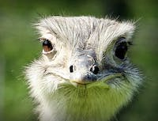
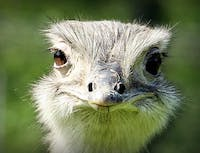

Green Sturgmar Zoo's cackle of Web Developmenters have colored us happy with their amazing designs and functionality. It is amazing to watch them validate all their work and put up on a serving plate. Those webs they weave are truly elaborate as if they were coded to perfection.
Species on Exhibit Today


 
